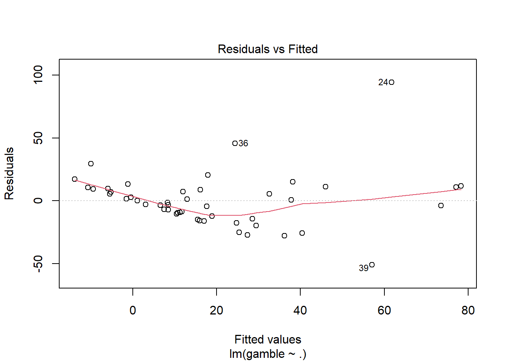
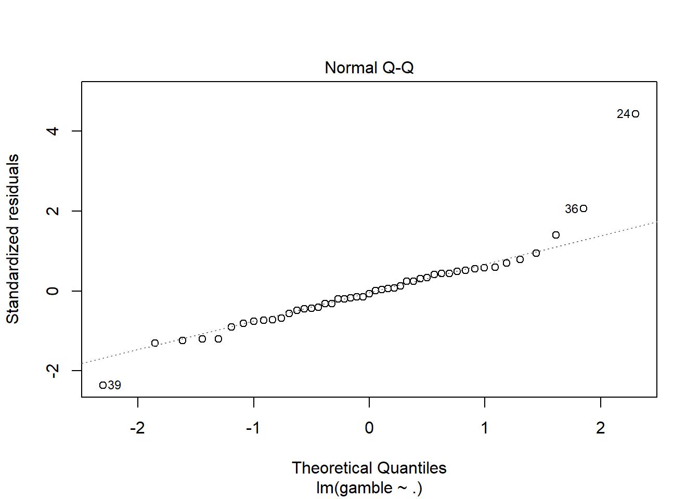
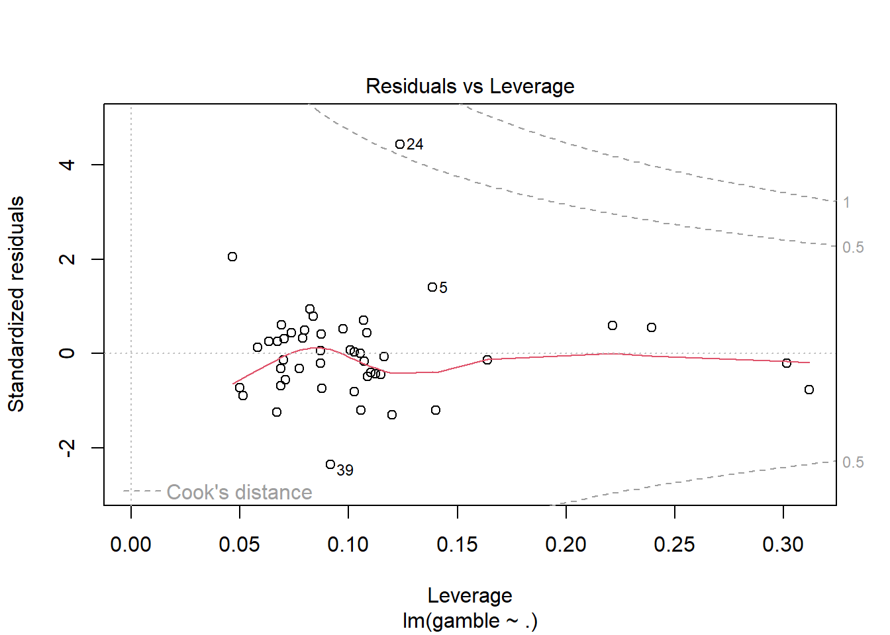
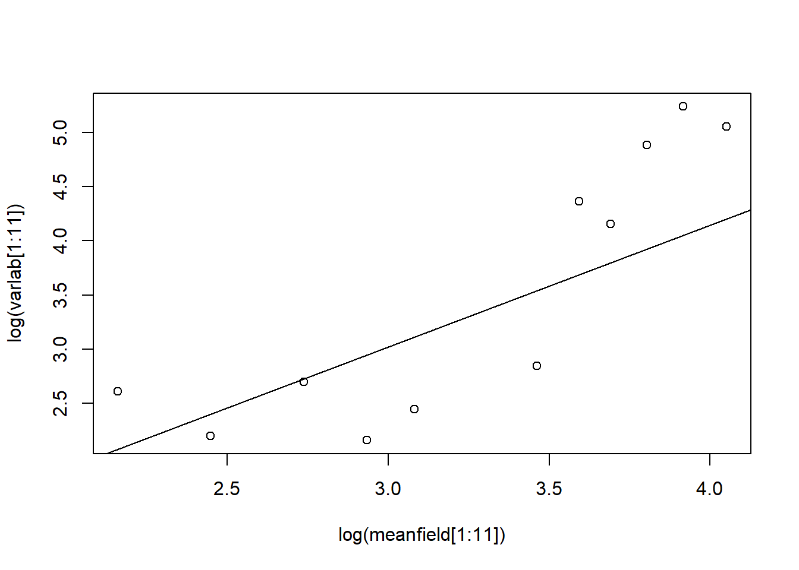
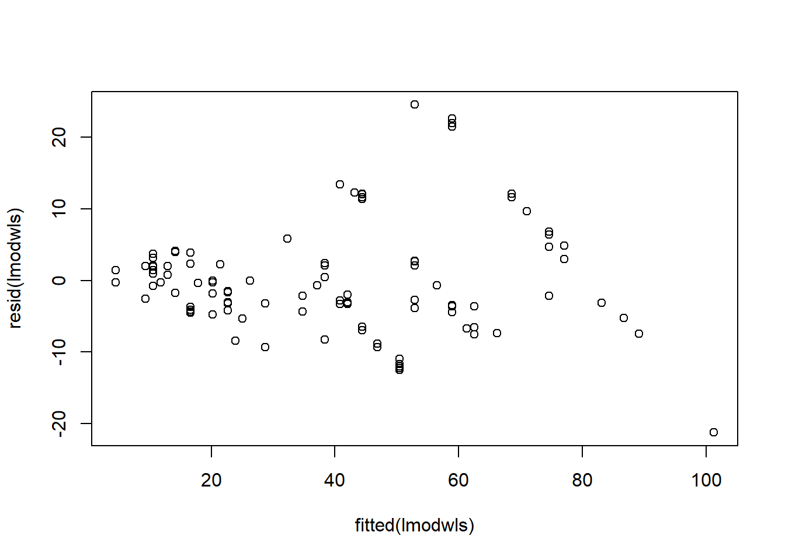
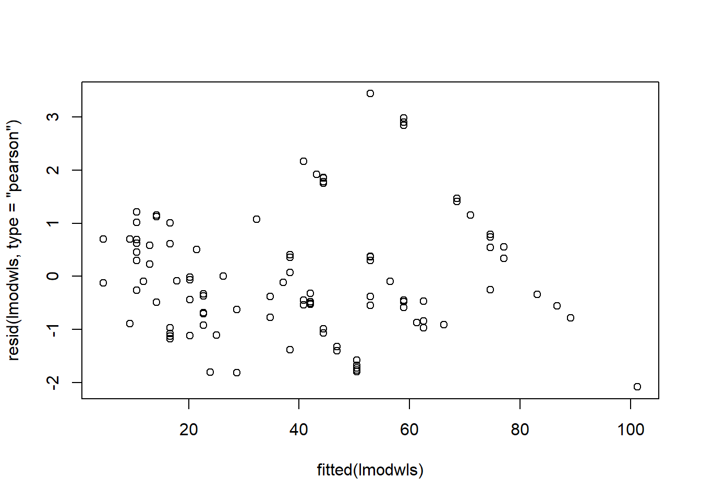

See Canvas for HW #5 assignment due date. Complete all of the following problems. Ideally, the theoretical problems should be answered in a Markdown cell directly underneath the question. If you don’t know LaTex/Markdown, you may submit separate handwritten solutions to the theoretical problems. Please do not turn in messy work. Computational problems should be completed in this notebook (using the R kernel is preferred). Computational questions may require code, plots, analysis, interpretation, etc. Working in small groups is allowed, but it is important that you make an effort to master the material and hand in your own work.
A. Theoretical Problems
A.1 Association studies given causal language?
Sometimes, researchers using non-causal models with observational data are careful to use associative, non-causal language. In some cases, these studies are picked up by media outlets and incorrectly interpreted causally.
Other times, researchers themselves are unintentionally using causal language with non-causal models and observational data.
[20 points] Find a science or social science study reported in the news. Podcasts like Hidden Brain might be useful here! Does the report of the study make reference to a causal relationship? If so, based on the actual study, do you think that the causal claims are justified? Does it use phrases like “\(X\) is associated with \(Y\)”? Or “\(X\) causes \(Y\)” ?…
YOUR ANSWER HERE
I can’t say I had time to go looking for a specific example, but I will say that I currently am in the possession of several books like “Weapons of Math Destruction” (by Cathy O’Neil), and other related books that keep me grounded on being wary and skeptical of putting too much confidence on placing causal language to non-causal models. (Which, quite frankly, I’ll probably consider all statistical models to be non-causal models. Just in my opinion, but that can be an entirely different conversation.) (Some of these books and resources I have touch into the territory of artificial UNintelligence of machine learning models and etc. which grows into the territory of AI ethics too, but that really is an entirely different conversation.)
B. Computational Problems
B.1 (35 points)
For the teengamb data, fit a model with gamble as the response and the other variables as predictors. Look for violations of:
[5 points] Constant Variance
[5 points] Normality
[5 points] Linearity
[5 points] Correlations
[5 points] Measurement validity
[10 points] Look for (a) outliers, (b) leverage points, and (b) potentially influential points. This part of the problem requires some self-study about defining and identifying leverage points, and describing the relationship between leverage and influence. Chapter 6 of Linear Models with R (pdf on Canvas) may help!
sex status income verbal
Min. :0.0000 Min. :18.00 Min. : 0.600 Min. : 1.00
1st Qu.:0.0000 1st Qu.:28.00 1st Qu.: 2.000 1st Qu.: 6.00
Median :0.0000 Median :43.00 Median : 3.250 Median : 7.00
Mean :0.4043 Mean :45.23 Mean : 4.642 Mean : 6.66
3rd Qu.:1.0000 3rd Qu.:61.50 3rd Qu.: 6.210 3rd Qu.: 8.00
Max. :1.0000 Max. :75.00 Max. :15.000 Max. :10.00
gamble
Min. : 0.0
1st Qu.: 1.1
Median : 6.0
Mean : 19.3
3rd Qu.: 19.4
Max. :156.0
#YOUR CODE HEREtgmod <-lm(gamble ~ ., data = teengamb)summary(tgmod)
Call:
lm(formula = gamble ~ ., data = teengamb)
Residuals:
Min 1Q Median 3Q Max
-51.082 -11.320 -1.451 9.452 94.252
Coefficients:
Estimate Std. Error t value Pr(>|t|)
(Intercept) 22.55565 17.19680 1.312 0.1968
sex -22.11833 8.21111 -2.694 0.0101 *
status 0.05223 0.28111 0.186 0.8535
income 4.96198 1.02539 4.839 1.79e-05 ***
verbal -2.95949 2.17215 -1.362 0.1803
---
Signif. codes: 0 '***' 0.001 '**' 0.01 '*' 0.05 '.' 0.1 ' ' 1
Residual standard error: 22.69 on 42 degrees of freedom
Multiple R-squared: 0.5267, Adjusted R-squared: 0.4816
F-statistic: 11.69 on 4 and 42 DF, p-value: 1.815e-06
JK note: Can take a closer look at these plots individually with the following
Residual vs. Fitted
plot(tgmod,which =1)

Normal QQ plot
plot(tgmod, which =2)

Residuals vs. Leverage
plot(tgmod, which =5)

YOUR ANSWER HERE
JK note: The links in the following text will take you to the anchor point of the plot that is being referenced. If viewing this html file on a web browser, you should be able to hit the “back” button to return to where you were before clicking the link to the anchor point (i.e. back to this point in the text).
A quantile-quantile plot (aka QQ plot) can give some potential insight into our normality assumption. The QQ Plot produced for this model suggest some non-normality, particularly in the tails of the distribution.
A residual vs. fitted plot can give some information on linearity, and the random distribution and constant variance in the residuals. The Residual vs. Fitted plot for this model shows some “fanning out” behavior when you analyze the plot from left-to-right. There may be a couple outliers as well. In any case the plot appears to suggest violations in constant variance in our residuals and our linearity assumptions.
As indicated in the assignment directions, I had to look up “leverage” a bit myself, but from what I understand “leverage” is in relation to how much a regression model would change with or without an observation. I’m still not entirely clear on how to read a residual vs. leverage plot, but I’m guessing according to the one here there may be a few points that may have a lot of effect on the model depending on their presence in the dataset.
B.2 (45 Points)
Researchers at the National Institutes of Standards and Technology (NIST) collected pipline data on ultrasonic measurements of the depth of defects in the Alaska pipeline in the field. The depths of the defects were then remeasured in the laboratory. The laboratory measurements are more accurate than the field measurements, but more time consuming and expensive. We want to develop a regression model for correcting the in field measurements.
B.2 (a) [10 points] Fit a regression model where Lab is the response and Field is the predictor and save this model as lmodPipeline. Check for non-constant variance.
Field Lab Batch
Min. : 5.00 Min. : 4.30 Min. :1.000
1st Qu.:18.00 1st Qu.:18.35 1st Qu.:2.000
Median :35.00 Median :38.00 Median :3.000
Mean :33.58 Mean :39.10 Mean :3.234
3rd Qu.:46.50 3rd Qu.:55.55 3rd Qu.:5.000
Max. :85.00 Max. :81.90 Max. :6.000
#YOUR CODE HERElmodPipeline <-lm(Lab ~ Field, data = pipeline)summary(lmodPipeline)
Call:
lm(formula = Lab ~ Field, data = pipeline)
Residuals:
Min 1Q Median 3Q Max
-21.985 -4.072 -1.431 2.504 24.334
Coefficients:
Estimate Std. Error t value Pr(>|t|)
(Intercept) -1.96750 1.57479 -1.249 0.214
Field 1.22297 0.04107 29.778 <2e-16 ***
---
Signif. codes: 0 '***' 0.001 '**' 0.01 '*' 0.05 '.' 0.1 ' ' 1
Residual standard error: 7.865 on 105 degrees of freedom
Multiple R-squared: 0.8941, Adjusted R-squared: 0.8931
F-statistic: 886.7 on 1 and 105 DF, p-value: < 2.2e-16
YOUR ANSWER HERE
B.2 (b) [10 points] Sometimes transforming the response and predictor helps in stabilizing variance. Find a transformation on Lab and/or Field so that in the transformed scale the relationship is approximately linear with constant variance. Restrict your choice of transformation to square root, log, and inverse. Save your transformed variables as pipeline$LabTransform and pipeline$FieldTransform. Then, regress the transformedLab variable (response) onto the transformed Field variable (predictor), and save this as lmodTr.
Field Lab Batch LabTransform
Min. : 5.00 Min. : 4.30 Min. :1.000 Min. :1.459
1st Qu.:18.00 1st Qu.:18.35 1st Qu.:2.000 1st Qu.:2.910
Median :35.00 Median :38.00 Median :3.000 Median :3.638
Mean :33.58 Mean :39.10 Mean :3.234 Mean :3.444
3rd Qu.:46.50 3rd Qu.:55.55 3rd Qu.:5.000 3rd Qu.:4.017
Max. :85.00 Max. :81.90 Max. :6.000 Max. :4.405
FieldTransform
Min. :1.609
1st Qu.:2.890
Median :3.555
Mean :3.330
3rd Qu.:3.839
Max. :4.443
Call:
lm(formula = LabTransform ~ FieldTransform, data = pipeline)
Residuals:
Min 1Q Median 3Q Max
-0.40212 -0.11853 -0.03092 0.13424 0.40209
Coefficients:
Estimate Std. Error t value Pr(>|t|)
(Intercept) -0.06849 0.09305 -0.736 0.463
FieldTransform 1.05483 0.02743 38.457 <2e-16 ***
---
Signif. codes: 0 '***' 0.001 '**' 0.01 '*' 0.05 '.' 0.1 ' ' 1
Residual standard error: 0.1837 on 105 degrees of freedom
Multiple R-squared: 0.9337, Adjusted R-squared: 0.9331
F-statistic: 1479 on 1 and 105 DF, p-value: < 2.2e-16
B.2 (c) [5 points] Now let’s try weighted least squares. The code below splits the range of Field into 12 groups of size nine (except for the last goup which has only eight values). Within each group, we compute the variance of Lab as varlab and the mean of Field as meanfield. Write comments for each line of the code to demonstrate what each line is doing.
splits Field in npipe into the 12 factor levels in ff
lapply(split(npipe$Field,ff),mean)
replaces the contents of each level to the mean of each level
unlist(lapply(split(npipe$Field,ff),mean))
the unlist() function “flattens” a list or vector
so essentially changes the structure of the above so that it’s not levels but a list (or something similar datatype)?
in any case, meanfield is a list (or something) of means of the Field data split into 12 groups.
varlab = unlist(lapply(split(npipe$Lab,ff),var))
based on the above, I’m guessing varlab is similar to meanfield but obtaining the variance of the Lab data when it’s split into 12 groups (instead of the mean)
B.2 (d) [20 points] Suppose that the variance in the repsonse is linked to the predictor in the following way: \[ Var(Lab) = a_0Field^{a_1}.\] Use simple linear regression on (transformations of) varlab and meanfield to estimate \(a_0\) and \(a_1\). Call this regression lmodVar.Use these estimates to perform weighted least squares where the weights are the inverse of the variance of Lab. Call this regression lmodwls. Print a summary of this model and comment on the fit.
#YOUR CODE HERE (hw help recieved from Dr. O)lmodVar =lm(log(varlab[1:12]) ~log(meanfield[1:12]))plot(log(meanfield[1:11]),log(varlab[1:11]))abline(lmodVar)

summary(lmodVar)
Call:
lm(formula = log(varlab[1:12]) ~ log(meanfield[1:12]))
Residuals:
Min 1Q Median 3Q Max
-2.2038 -0.6729 0.1656 0.7205 1.1891
Coefficients:
Estimate Std. Error t value Pr(>|t|)
(Intercept) -0.3538 1.5715 -0.225 0.8264
log(meanfield[1:12]) 1.1244 0.4617 2.435 0.0351 *
---
Signif. codes: 0 '***' 0.001 '**' 0.01 '*' 0.05 '.' 0.1 ' ' 1
Residual standard error: 1.018 on 10 degrees of freedom
Multiple R-squared: 0.3723, Adjusted R-squared: 0.3095
F-statistic: 5.931 on 1 and 10 DF, p-value: 0.03513
a =coef(lmodVar)w =with(pipeline, exp(a[1])*Field^(a[2]))
lmodwls =lm(Lab ~ Field, data = pipeline, weights =1/w)summary(lmodwls)
Call:
lm(formula = Lab ~ Field, data = pipeline, weights = 1/w)
Weighted Residuals:
Min 1Q Median 3Q Max
-2.0826 -0.8102 -0.3189 0.6212 3.4429
Coefficients:
Estimate Std. Error t value Pr(>|t|)
(Intercept) -1.49436 0.90707 -1.647 0.102
Field 1.20828 0.03488 34.637 <2e-16 ***
---
Signif. codes: 0 '***' 0.001 '**' 0.01 '*' 0.05 '.' 0.1 ' ' 1
Residual standard error: 1.169 on 105 degrees of freedom
Multiple R-squared: 0.9195, Adjusted R-squared: 0.9188
F-statistic: 1200 on 1 and 105 DF, p-value: < 2.2e-16
plot(fitted(lmodwls), resid(lmodwls))

plot(fitted(lmodwls), resid(lmodwls, type ="pearson")) #students probably won't use pearson

#residuals, because we didn't talk about them in class. In that case, the residuals will still#appear to have no-nconstant variance.
Using the regular residuals, we still see some evidence of non-constant variance.
Using the Pearson residuals, which standardizes the residuals, we see an improvement in fit (no strong evidence of non-constant variance).
YOUR ANSWER HERE (reworded into own words)
Non-constant variance appears to be more apparent in the plot with the “regular” residuals (again with the “fanning out” behavior).
It’s not perfect, but the plot using the Pearson residuals shows “less” non-constant variance.